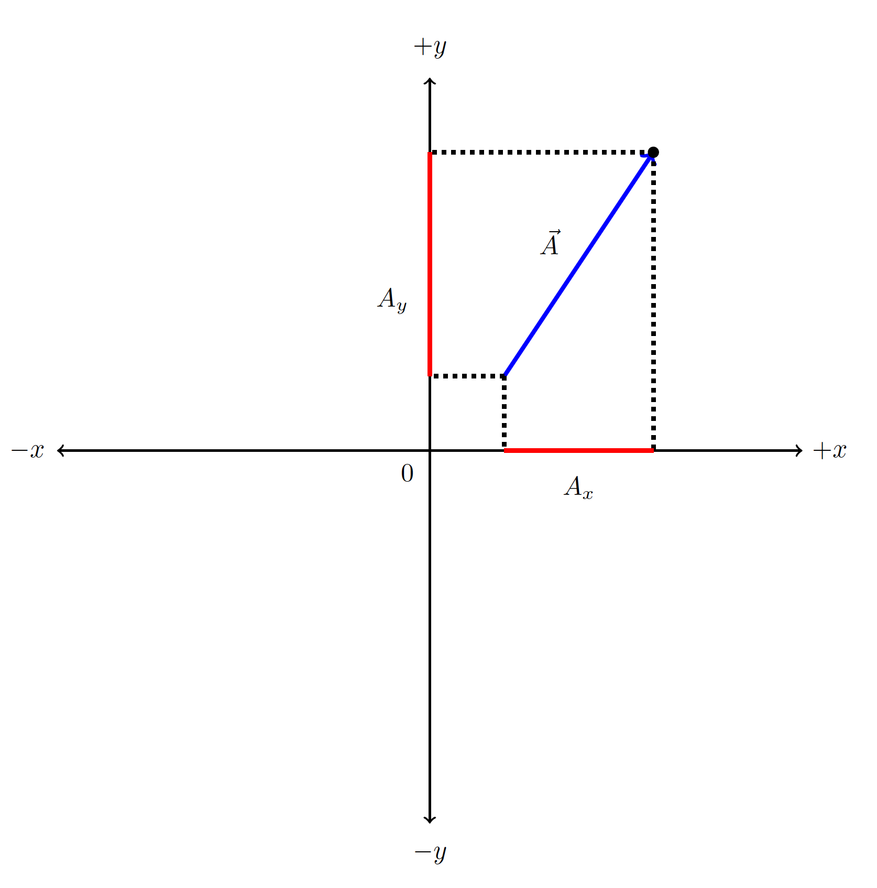
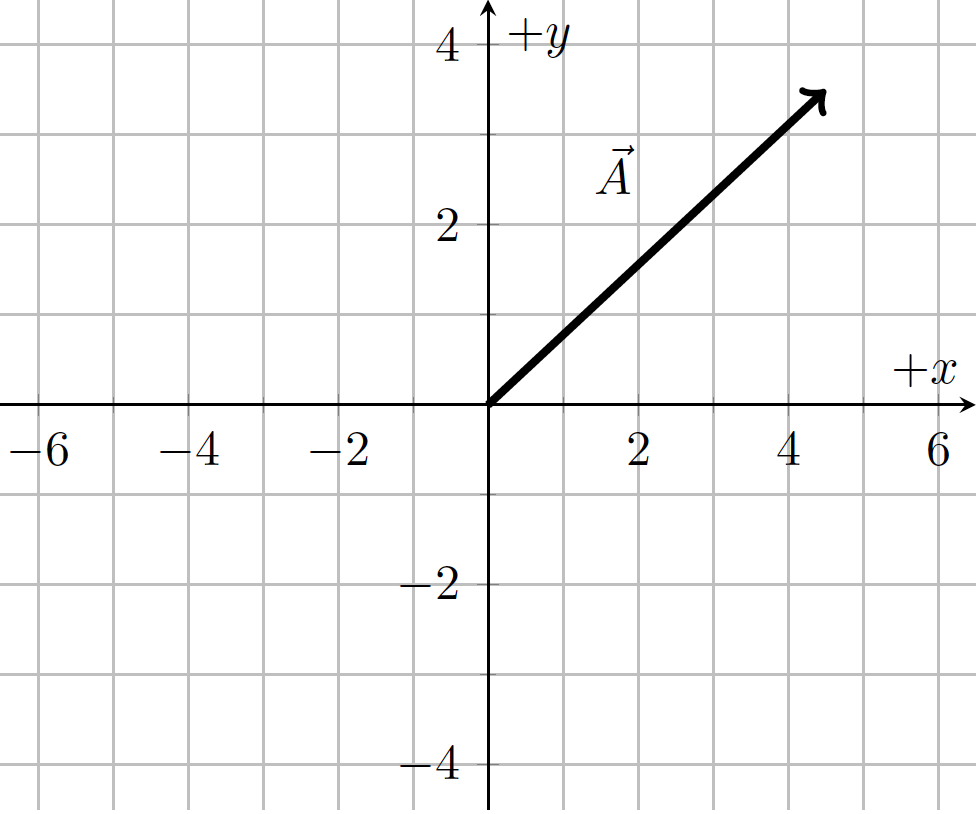
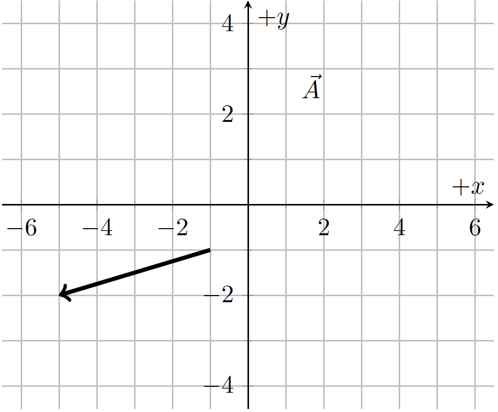
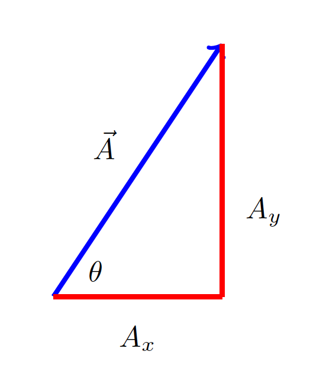

C2.4 Analytic Representation of a Vector#
C2.4.1 Motivation#
In most cases in this class, we are using vectors to quantify physical objects and thus require an analytic approach.
C2.4.2 Vector Components#
Consider a vector \(\vec{A}\) in a 2D reference frame as shown in the figure below. If we project the two end points of the vector (or arrow) onto the x and y-axis, respectively, then the directed line segments of the projections are the components of \(\vec{A}\). We can write them as \(A_x\) and \(A_y\).
We can now describe the vector \(\vec{A}\) through its components (or in component form):
Other ways of writing the same thing:
or
When we discuss unit vectors, we will see one more way of writing a vector.
2. Magnitude of a Vector#
Since the two projected components and the length of the vector itself form a right-angle triangle, we calculate the magnitude of the vector by applying the Pythagorean theorem:
It can be extended beyond 2D, so in a 3D coordinate system the magnitude of a the vector would be
Determine the x and y-components of vector \(\vec{A}\) and its magnitude. 
Determine the x and y-components of vector \(\vec{A}\) and its magnitude. 
C2.4.3 Direction of a Vector#
Above, we saw how we can find the magnitude of a vector if we have knowledge of the vector components. In order to fully describe the vector, we still need to find its direction. The direction can be provided through an angle measured with respect to some reference line. If we draw the vector and its components, we can identify a right-angle triangle and apply trigonometric functions to specify an angle.
The relation between the angle \(\theta\) and the components \(A_x\) (adjacent side) and \(A_y\) (opposite side) is
or
Similar relations exists if we include the magnitude of the vector itself (hypotenuse):
and
Consider two vectors: \(\vec{A} = \begin{bmatrix} 3 \\ 5 \end{bmatrix}\) and \(\vec{B} = \begin{bmatrix} 4 \\ 2 \end{bmatrix}\). Make a sketch of each vector, and find the magnitude and direction of each vector.
Consider a position vector \(\vec{r}\) with a length of 8.0 m and directed 30\(^\circ\) in counterclockwise direction from the positive x-axis. Find its components \(r_x\) and \(r_y\).